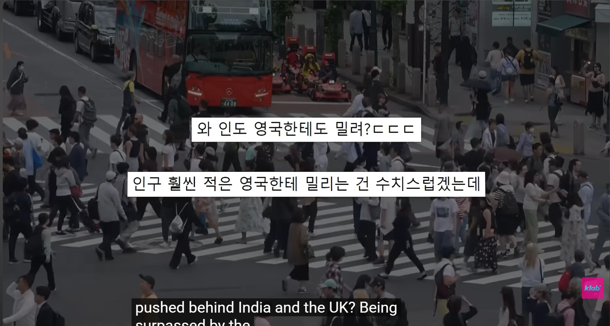
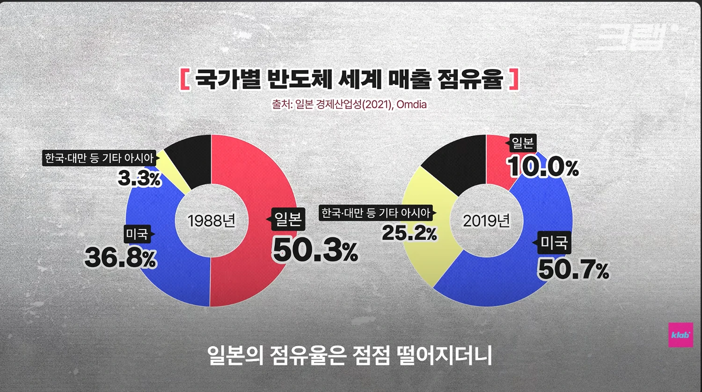
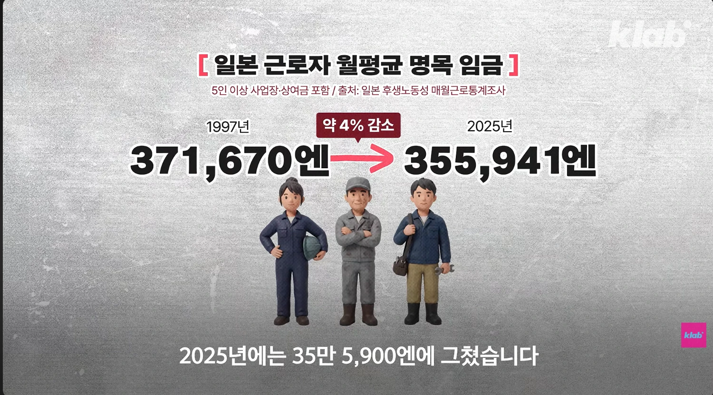
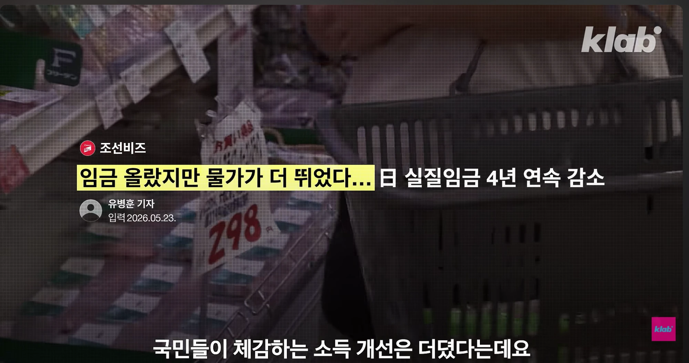
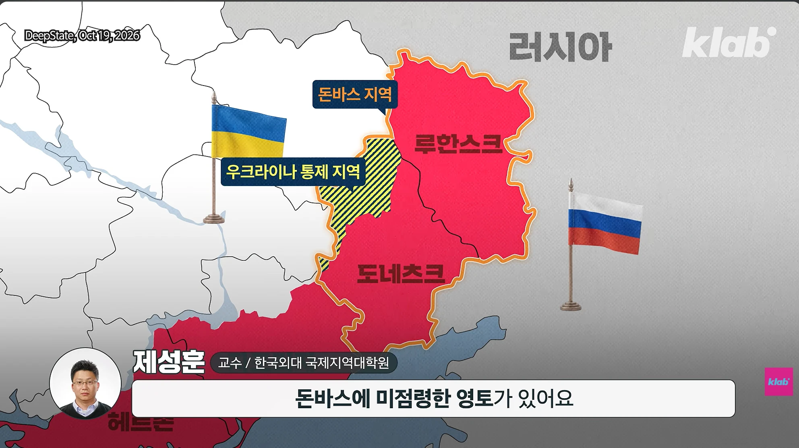
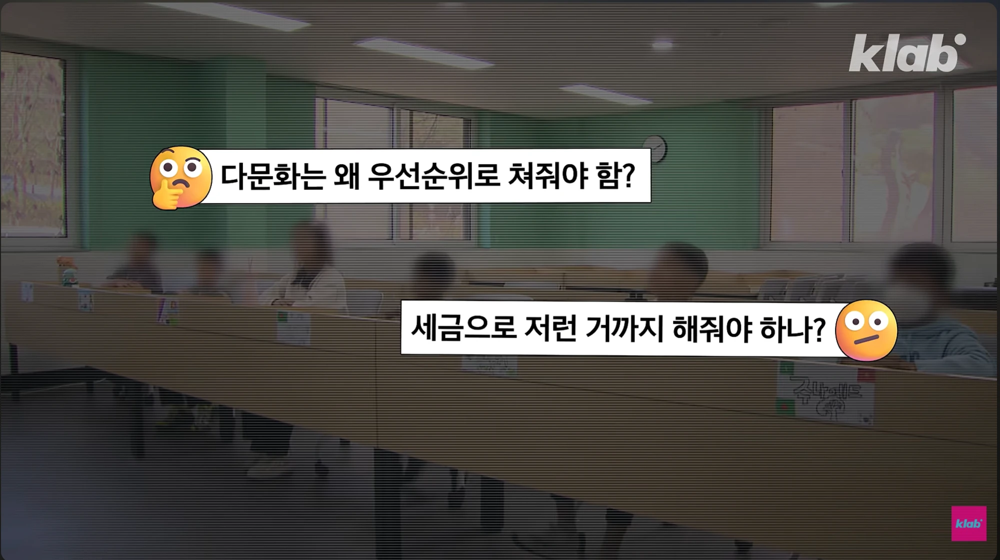
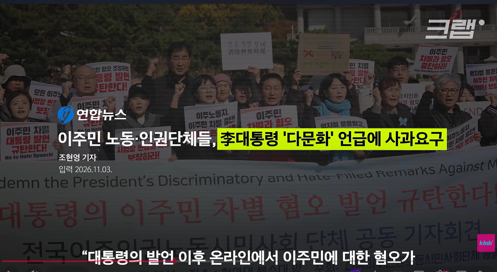

국뽕 영상 · 클랩(klab) 스타일 화면 디자인 시안
참고 사진 7장(ref_1~7) 기준. 영상 위에 얹는 요소 5종 + 전환·효과음 규칙. 아래 프레임은 16:9 시안입니다(자막 띠 항상 맨 아래, 로고는 가림/모자이크).
1. 원음 구간 — 원본 클립 + 한국어 흰 띠 자막 (참고 1)
원본 중국어 자막은 띠로 덮는다. 컷 4초 이하, 좌우반전·크롭·속도 변경.
와 인도 영국한테도 밀려?ㅋㅋ
인구 훨씬 적은 영국한테 밀리는 건 수치스럽겠는데
모자이크
2. 내레이션 구간 — 어두운 B-roll + 키워드 헤드라인 (참고 4·6)
원본 영상은 소리 없이 어둡게(반투명 45%) 깔고, 흰 굵은 글씨 + 형광 연두(#D9FF65) 강조. 천천히 줌인.
● 조선비즈
임금 올랐지만 물가가 더 뛰었다… 日 실질임금 4년 연속 감소유병훈 기자 · 입력 2026.05.23.국민들이 체감하는 소득 개선은 더뎠다는데요
3. 댓글·인용 — 흰 말풍선 + 이모지 + 타이핑 (참고 5)
실제 댓글만. 글자가 한 글자씩 타이핑되고 이모지는 팝업.
🤔다문화는 왜 우선순위로 쳐줘야 함?
세금으로 저런 거까지 해줘야 하나?🧐
4. 그래프 — 회색 질감 + [ 제목 ] + 큰 숫자 + 출처 (참고 2·3)
국가별 반도체 세계 매출 점유율
출처: 일본 경제산업성(2021), Omdia
50.3%
일본 근로자 월평균 명목 임금
5인 이상 사업장·상여금 포함 / 출처: 후생노동성
371,670엔
→
355,941엔
약 4% 감소
5. 지도·인물 메모 (참고 6 변형)
돈바스 지역
돈바스에 미점령한 영토가 있어요
6. 화면 전환·효과음 규칙
전환 줌인 · 줌아웃 · 책 넘어가는(페이지 컬) 효과 / 타이핑 댓글·언론 카드 / 효과음 책장 넘김·함성 등, 너무 많지 않게(1~2분에 3~4회 이하) / 로고 빌리빌리·샤오홍슈 등은 모자이크
7. 색상 4종 (참고 사진 추출)
연연두 배경 #F5FFDC형광 연두 #D9FF65연분홍 배경 #FEE9F2주의 박스 #FCF1ED참고 원본 사진







기록: 2026-11-22 · klab 스타일 시안 작성 — by Claude Code